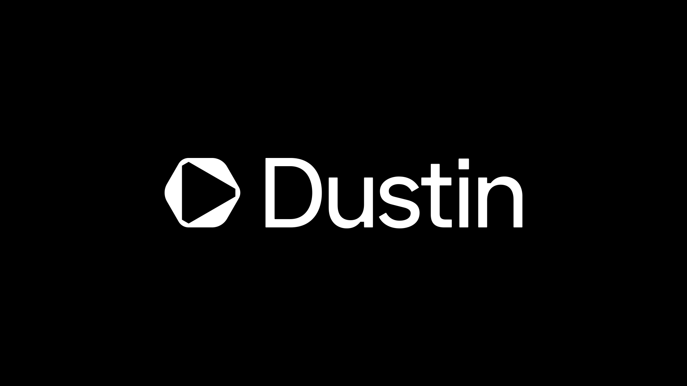
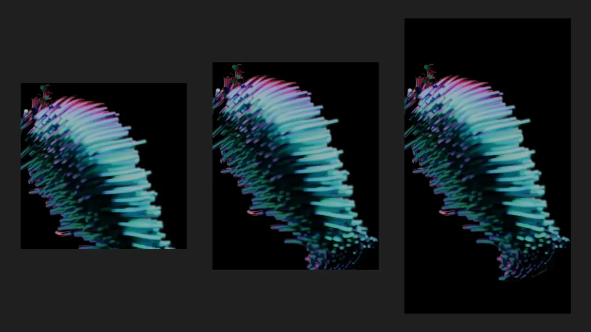
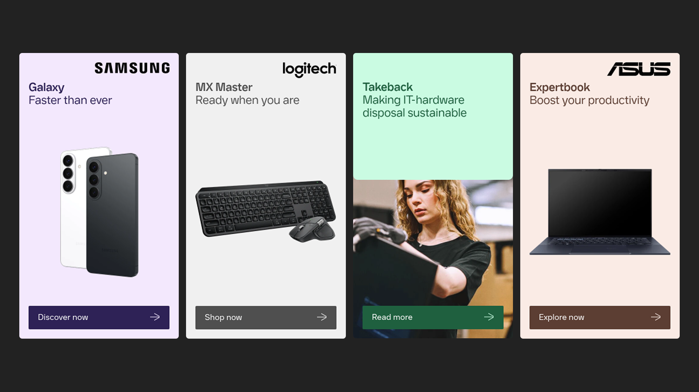
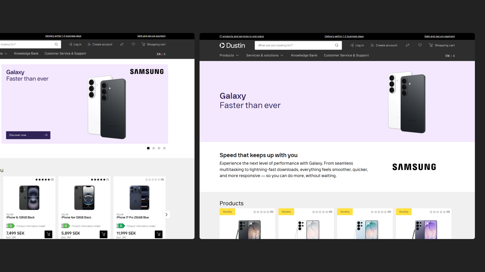
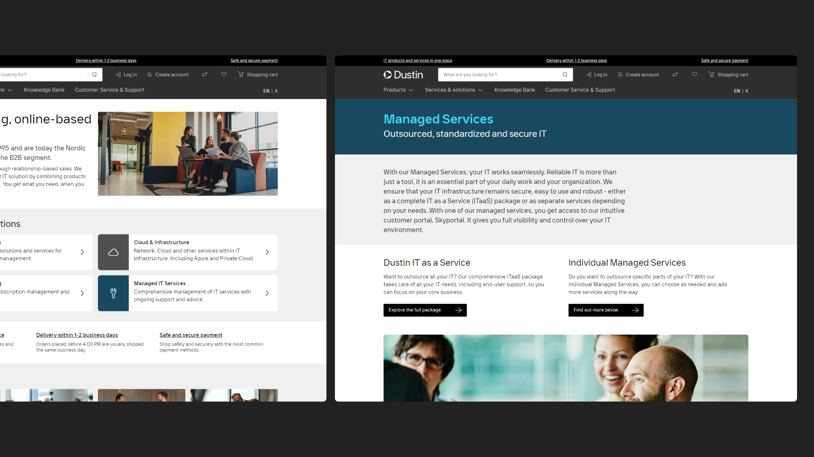
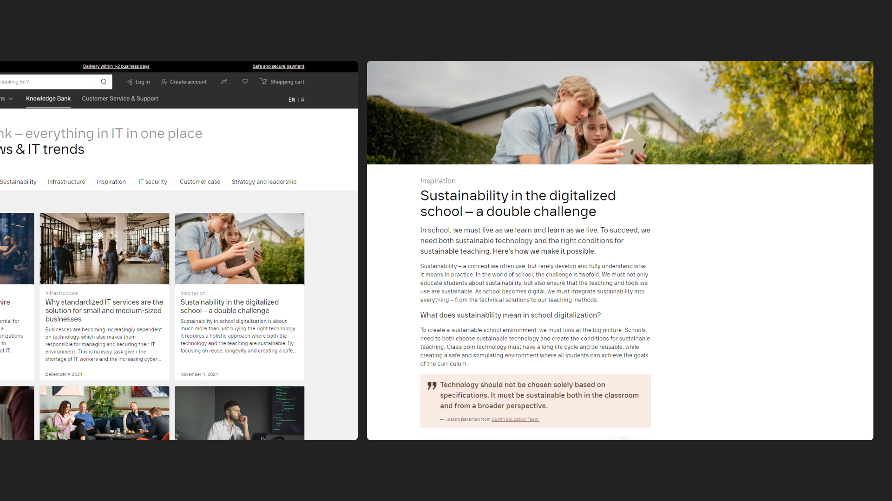
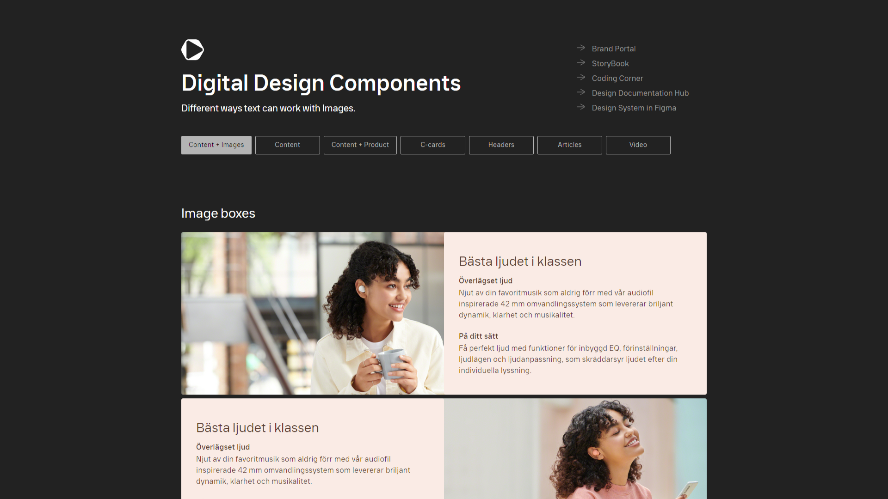

Banners
Produced a high volume of banners across a wide range of formats and channels — on-site, social media, email, OOH and external media — for vendor campaigns, private labels, events and brand awareness.

Dustin is a leading online based IT partner in the Nordics and Benelux, providing IT-services and solutions. Established B2B reseller of IT products from worldwide brands and private labels.
Digital Design
Campaigns
Banners
Web

I worked as a digital designer for Dustin both in-house and at an external advertising agency, handling design production across a multitude of assets. Working in close collaboration with internal teams and external vendors, I ensured brand consistency while meeting tight deadlines.
CMS
Bannerflow
Figma
Adobe Creative Suite
Digital Designer
4 Years
In-house
External Advertising Agency
As part of a design team I took sole ownership of individual campaigns from brief to delivery — designing and producing banners, landing pages and digital marketing assets for both internal and external channels.
Produced a high volume of banners across a wide range of formats and channels — on-site, social media, email, OOH and external media — for vendor campaigns, private labels, events and brand awareness.


Responsible for web content across Dustin's markets — building landing pages for campaigns, events and solutions through CMS platforms.
Built and maintained landing pages across Dustin's websites, ensuring visual consistency with marketing assets and the design system for campaigns, events, solutions and articles.



Updated and maintained the digital component library in line with existing design systems and brand guidelines — ensuring consistency across assets and reducing production time for landing pages.
